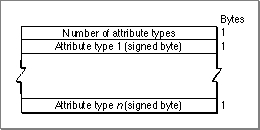

Locating Records in a Dictionary
This section tells you how to use a dictionary--that is, how to extract records from it. You can obtain records from a dictionary in two general ways: by key (search string) and by index (position in the file).Locating Records by Key
You can use theFindRecordInDictionaryfunction to search for dictionary records that match specified keys. Matching keys is perhaps the most standard dictionary search method: the user types in a key, and you search the dictionary for the data associated with that key.You can provide a requested attributes table to narrow the search to only certain types of entries within the record that matches the search key. Figure 8-7 shows its format. You can request
Figure 8-7 The requested attributes table
- only the entries with the specified attributes
- the raw data of all the entries in the record without any attributes
- everything in the record

For example, you can use the requested attributes table to select only the verbs or nouns in the dictionary that match a key. The currently defined attribute types and their constants are listed in Table 8-2 on page 8-27.Here is an example of how to use
FindRecordInDictionary. Suppose the following entries are all the entries that match the key "hunch" in a dictionary record:
Raw data Attribute type Value Optional attribute data 'guess' kNoun -1 kVerb -2 'push' kVerb -2 kMyType1 127 MyType1Data 'bend' kMyType2 126 MyType2Data Now suppose you call
FindRecordInDictionaryand pass a pointer to a requested attributes table that specifies two types:kNoun(-1) andkMyType1(127).FindRecordInDictionaryreturns the data shown in Table 8-1.Locating Records by Index
You can use theFindRecordByIndexInDictionaryfunction to retrieve record data within a dictionary file by index rather than by matching key strings. In this way you can examine a specific record or sequence of records, to look for the information you need.As with
FindRecordInDictionary, you can provide a requested attributes table to narrow the search to certain types of entries. If you want to get all records with entries of a particular attribute type, you can callFindRecordByIndexInDictionaryrepeatedly. In Listing 8-4, the routine loops through the entire dictionary, displaying the key and the raw data of the first entry of each record in turn. (The application routineGetIndexedDataStringFromRecordconverts the raw data from each record into
a string for display.)Listing 8-4 Displaying all records in a dictionary by index
PROCEDURE ShowAllEntries (dictionaryReference: LONGINT); VAR err: OSErr; dictionaryInfo: DictionaryInformation; index: Integer; keyString, descriptionStr: Str255; entriesHandle: Handle; txtDialog: DialogPtr; finalTick: LongInt; BEGIN IF dictionaryReference <> 0 THEN BEGIN {first find out how many records there are} err := GetDictionaryInformation(gDictionaryReference, dictionaryInfo); IF err = noErr THEN BEGIN entriesHandle := NewHandle(0); IF entriesHandle <> NIL THEN BEGIN descriptionStr := 'Displaying names in dictionary'; txtDialog := ShowTextDialog(@descriptionStr[1], LENGTH(descriptionStr)); Delay(60, finalTick); FOR index := 1 TO dictionaryInfo.numberOfRecords DO BEGIN {return raw data for all entries of each record} err := FindRecordByIndexInDictionary (dictionaryReference, index - 1, NIL, keyString, entriesHandle); {we only care about the first description string } GetIndexedDataStringFromRecord(entriesHandle, 1, descriptionStr); {format as "key: description"} keyString := CONCAT(keyString, ': '); keyString := CONCAT(keyString, descriptionStr); SetTextDialog(txtDialog, @keyString[1], LENGTH(keyString)); Delay(60, finalTick); END; CloseTextDialog(txtDialog); DisposeHandle(entriesHandle); END; END; END; END; {ShowAllEntries}